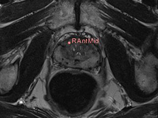
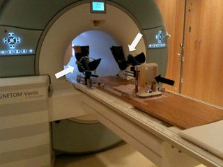
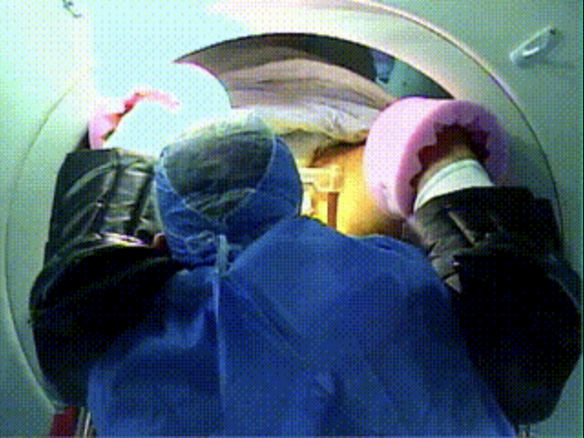
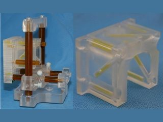
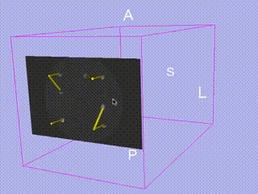
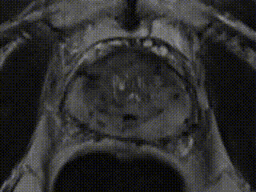
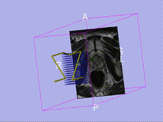
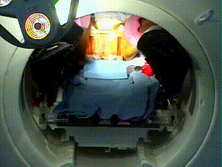
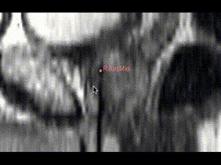

We perform transperineal MRI-guided biopsies for prostate cancer at the wide-bore 3T MRI scanner in AMIGO. The wide-bore 3T MRI (Siemens), combined with custom built software and hardware, was made possible through NIH grants, enabling us to launch this unique and clinically useful program from the inception of the AMIGO suite. Men with either recurrent prostate cancer post-surgeries or radiation treatments, or with consecutive negative ultrasound-guided biopsies but rising PSA are enrolled in our program.
In addition, we have recently begun a new clinical research program to investigate the feasibility of focal ablation therapies for prostate cancer using MRI-guidance. Extending the software, hardware, and multi-parametric MRI methods developed in MRI-guided biopsies, we perform cryoablation of the dominant lesion to manage cancer recurrence following treatments. In the patients who have been successfully treated so far, the advantage of planning, targeting, and guidance under wide bore 3T MRI in AMIGO has been demonstrated. The wide bore scanner allows patients to remain in the scanner during the placement of the cryoablation probe under MRI guidance. By keeping the patients statically in the scanner, a detailed ablation plan, produced at the beginning of the procedure, can be overlaid onto the intra-procedural images without image registration, a significant advantage over other potential approaches in which the patient would be moved into the scanner for imaging, then out of the scanner for ablation probe placement.
Prostate Biopsy Workflow in AMIGO

Preprocedural Planning
The radiologist reviews the preprocedural multi-parametric MRI exams to identify suspicious targets.

Patient Preparation
White Arrows: Custom-made MR imaging-compatible table top with leg support. Black Arrow: Template with holes for the accurate biopsy needle placement is placed against the patient’s perineum.

Patient Preparation
The patient is taken to the 70 cm wide-bore 3T MRI and placed on the prostate intervention table in the lithotomy position. The sterile stationary frame and the template with the Z-frame are set up.

Patient Preparation
View of the template with the Z- shaped calibration frame (Z-frame).

Intraoperative MRI
A 2D slice image of the Z-frame for the Z-frame registration is taken. The 3D view of the model of the Z-frame and the template overlaid on the slice image is displayed on the navigation software (3D Slicer).

Intraoperative MRI
A second intraprocedural 2D multi-slice T2-weighted (T2W) image is obtained. For the registration, the region of interest is marked through manual cropping, so that afterwards, the two images become joined.

Intraoperative MRI
Through projection of all the intraprocedural and preprocedural targets onto the intraprocedural T2W image, 3D Slicer selects the optimal template holes for biopsy needle insertion and the depth for the needles. On the 3D view, the optimal needle path is calculated, (Green = Needle Path, Red = Target, Blue = Template, Yellow = Z-Frame).

Needle Placement
Following the Z-frame detachment from the template, the radiologist applies local anesthetic and inserts an 18-gauge × 15 cm MRI-compatible core biopsy needle through the selected hole until it reaches the calculated insertion depth.

Monitoring
Upon needle insertion, a 2D needle confirmation image is obtained in either the axial or the coronal plane at the planned target position to confirm that the needle was placed at the desired position. The needle placement was confirmed by the artifact shown on the real-time image. If the needle is not found sufficiently close to the target lesion, the needle is reinserted through a selected hole based on MR image guidance. Upon satisfactory placement of the needle tip over the target (based on the MR), the tissue samples are collected, labeled, and sent for site-specific pathological examination.
Software
SliceTracker is a 3D Slicer extension designed to support the workflow of the in-bore MRI-guided targeted prostate biopsy (MRgBx) (see references below for clinical context). This extension was developed and tested to support transperineal MRgBx procedure in the Advanced Multimodality Image Guided Operating (AMIGO).
Book Chapters
Robert A. Cormack. Image-Guided Prostate Brachytherapy. Ch.57. Part V. mage-Guided Clinical Applications. In Ferenc A. Jolesz (Ed.), Intraoperative Imaging and Image-Guided Therapy. New York, NY: Springer; 2014. pp. 761-70.
Recent Publications
- Moreira P, Grimble J, Iftimia N, Bay CP, Tuncali K, Park J, Tokuda J. In Vivo Evaluation of Angulated Needle-Guide Template for MRI-Guided Transperineal Prostate Biopsy. Med Phys. 2021 May;48(5):2553-2565. PMID: 33651407; PMC8141017.
- Herz C, MacNeil K, Behringer PA, Tokuda J, Mehrtash A, Mousavi P, Kikinis R, Fennessy FM, Tempany CM, Tuncali K, et al. Open Source Platform for Transperineal In-Bore MRI-Guided Targeted Prostate Biopsy. IEEE Trans Biomed Eng. 2020;67 (2) :565-76. PMID: 31135342; PMC6874712.
- Patel NA, Li G, Shang W, Wartenberg M, Heffter T, Burdette EC, Iordachita I, Tokuda J, Hata N, Tempany CM, et al. System Integration and Preliminary Clinical Evaluation of a Robotic System for MRI-Guided Transperineal Prostate Biopsy. J Med Robot Res. 2019;4 (2). PMID: 31485544; PMC6726403.
- Mehrtash A, Ghafoorian M, Pernelle G, Ziaei A, Heslinga FG, Tuncali K, Fedorov A, Kikinis R, Tempany CM, Wells WM, et al. Automatic Needle Segmentation and Localization in MRI with 3D Convolutional Neural Networks: Application to MRI-targeted Prostate Biopsy. IEEE Trans Med Imaging. 2019;38 (4) :1026-36. PMID: 30334789; PMC6450731.
- Moreira P, Patel N, Wartenberg M, Li G, Tuncali K, Heffter T, Burdette EC, Iordachita I, Fischer GS, Hata N, et al. Evaluation of Robot-assisted MRI-guided Prostate Biopsy: Needle Path Analysis during Clinical Trials. Phys Med Biol. 2018;63 (20) :20NT02. PMID: 30226214; PMC6198326.
- Verma S, Choyke PL, Eberhardt SC, Oto A, Tempany CM, Turkbey B, Rosenkrantz AB. The Current State of MR Imaging-targeted Biopsy Techniques for Detection of Prostate Cancer. Radiology. 2017;285 (2) :343-56. PMID: 29045233; PMC5673043.
- Glazer DI, Mayo-Smith WW, Sainani NI, Sadow CA, Vangel MG, Tempany CM, Dunne RM. Interreader Agreement of Prostate Imaging Reporting and Data System Version 2 Using an In-Bore MRI-Guided Prostate Biopsy Cohort: A Single Institution’s Initial Experience. AJR Am J Roentgenol. 2017;209 (3) :W145-51. PMID: 28657843; PMC5613666.
- Velez E, Fedorov A, Tuncali K, Olubiyi O, Allard CB, Kibel AS, Tempany CM. Pathologic Correlation of Transperineal In-Bore 3-Tesla Magnetic Resonance Imaging-Guided Prostate Biopsy Samples with Radical Prostatectomy Specimen. Abdom Radiol (NY). 2017;42 (8):2154-9. PMID: 28293720; PMC5519410.
- Behringer PA, Herz C, Penzkofer T, Tuncali K, Tempany CM, Fedorov A. Open-Source Platform for Prostate Motion Tracking During in-Bore Targeted MRI-Guided Biopsy. Clin Image Based Proced. 2016;9401 :122-9. PMID: 27135064; PMC4844802.
- Fedorov A, Tuncali K, Panych LP, Fairhurst J, Hassanzadeh E, Seethamraju RT, Tempany CM, Maier SE. Segmented Diffusion-Weighted Imaging of the Prostate: Application to Transperineal In-bore 3T MR Image-guided Targeted Biopsy. Magn Reson Imaging. 2016;34 (8) :1146-54. PMID: 27240900; PMC4993653.
- Eslami S, Shang W, Li G, Patel N, Fischer GS, Tokuda J, Hata N, Tempany CM, Iordachita I. In-bore Prostate Transperineal Interventions with an MRI-guided Parallel Manipulator: System Development and Preliminary Evaluation. Int J Med Robot. 2016;12 (2) :199-213. PMID: 26111458; PMC4691445.
Content carried over from https://ncigt.org/mr-guided-prostate-biopsy/.